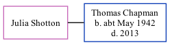

Julia Shotton, the wife of Thomas W Chapman (the fourth cousin on the father's side of Nigel Horne), and married Thomas in Dover, Kent, England around Nov 19651.
Citations
England & Wales Marriages 1837-2005 - Findmypast
Family Tree

Generated by ged2site. Last updated on Nov 13, 2024